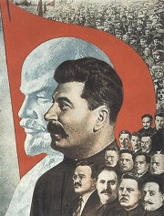
Gustav Klucius: Leninùv prapor
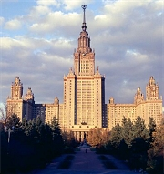
Lomonosovova univerzita v Moskvì
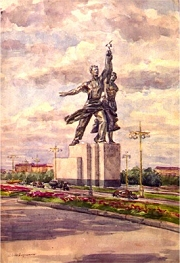
Olexij Šovkunìnko: Muchinùv pomník Dìlník a kolchoznice v Moskvì
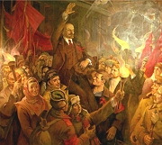
Arkadij Rusin: Leninùv pøíjezd do Petrohradu na podzim roku 1917
|
RUSKO (SSSR)
Rusko se stalo prvním státem, kde se dostali k moci komunisté. Lenin, Stalin, Trockij a další revolucionáøi prosazovali (na rozdíl od Marxe) nastolení diktatury proletariátu násilnou cestou. Ve feudálním Rusku ale dìlnická tøída prakticky neexistovala a diktátory se stali samotní komunistiètí vùdci. Zvláštì kolem Stalina se vytvoøil nebıvalı kult osobnosti a tento vládce si v nièem nezadal s nejhoršími ruskımi cary. Lidskı �ivot nemìl v zemích Sovìtského svazu prakticky �ádnou hodnotu. Napøíklad v dobì tzv. váleèného komunismu (vyhlášeného Leninem) mohl bıt dìlník, kterı se rozhodl stávkovat, okam�itì popraven, proto�e jeho èin byl pova�ován za dezerci. Miliony lidí zemøely díky hladomorùm zpùsobenıch neuvá�enou kolektivizací zemìdìlství. Nepoèítanì bylo obìtí vládního teroru a genocidy obyvatelstva.
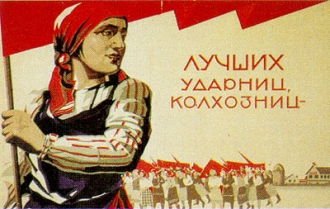
Nejlepší kolchoznice a dìlnice do leninské strany (propagaèní plakát Sergeje Sokolova)
Socialistickı realismus
Komunistickı re�im nejprve vyu�íval všechny umìlce, kteøí se postavili na jeho stranu. Brzy ale zaèalo pronásledování nejen jeho odpùrcù, ale také avantgardních tvùrcù, jejich� umìní bylo oznaèeno nálepkou zrùdnı formalismus. V prùbìhu 30. let 20. století se stal oficiálním proudem socialistickı realismus. Tento termín razil marxistickı teoretik Lunaèarskij a ideolog �danov. V jeho duchu tvoøil Gorkij, Šolochov, Tolstoj, Fadìjev nebo Leonov a øada podprùmìrnıch umìlcù. Teoreticky vycházel socialistickı realismus z myšlenek Marxe, Engelse a Lenina, kterı v knize Stranická organizace a stranická literatura definoval svou teorii odrazu. Podle Lenina umìní vychází ze skuteènosti, ale zároveò na ni aktivnì pùsobí. Zásadní byl kladnı vztah autora ke komunismu. Socialistickı realismus tematicky èerpá z revoluèních zmìn, zachycuje tøídní boj, opìvuje pracovní hrdinství a budovatelskı optimismus a odsuzuje nepøátele revoluce. Šlo tedy o nástroj oficiální propagandy a s umìním ani skuteèností nemìl socialistickı realismus mnoho spoleèného.
Socialistickı realismus se projevil i v pompézní architektuøe, pomníkové tvorbì nebo vıtvarném umìní. Vznikaly agitaèní divadelní pøedstavení, propagandistické filmy a plakáty. Oficiální umìlci se sdru�ovali ve státem kontrolovanıch a podporovanıch svazech a získali mnohé vıhody. Díla ostatních byla cenzurována a jejich autoøi mohli skonèit ve vìzení, GULAGu nebo na popravišti.
|
Nástup komunismu v Rusku
Na poèátku 20. stol. zaèalo Rusko smìøovat k demokracii, ale ke konci 1. sv. války zde probìhla Øíjnová revoluce (1917). Zemì se ocitla v obèanské válce, ve které se proti sobì postavili bolševici (rudí) a zastánci starıch poøádkù (bílí), které podporovala zahranièní intervenèní vojska. Do bojù se zapojili i èeskoslovenští legionáøi. Po vítìzství bolševikù vedenıch Vladimirem Iljièem Leninem (1870-1924) se stalo Rusko nejvìtší totalitní zemí a øada obyvatel emigrovala do ciziny, aby si zachránila �ivot. Za vlády Josifa Vissarionovièe Stalina (1878-1853) se pomìry v novì ustaveném Svazu sovìtskıch socialistickıch republik (1922), kterı tvoøilo 15 státù (Ukrajina, Bìlorusko, pobaltské republiky...), ještì zhoršily. Charakterizovaly je stranické èistky, zinscenované politické procesy, pronásledování lidí za jejich názory, nièení církevních památek, zavírání oponentù do pracovních táborù (GULAG), vra�dìní, bezpráví, vzrùstající moc tajné policie (Èeka, NKVD, KGB), hladomory a všudypøítomnı strach a teror. Zemìdìlství rozvrátila kolektivizace. Obrovské prostøedky se investovaly do budování tì�kého prùmyslu. Oficiální ideologií se stal ateismus a marxismus-leninismus.
Jak se v Rusku naplnilo rèení, �e revoluce po�írá vlastní dìti?
Jakı je tvùj názor na komunismus a komunisty?
Byl horším diktátorem Lenin nebo Stalin?
Co víš o Trockém?
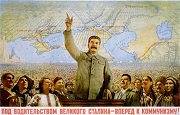
Boris Bìrezovskij: Náš vùdce velikı Stalin
Co si myslíš o socialistickém realismu?
Souhlasíš s Lunaèarskım? Proè?
Jakı je rozdíl mezi umìní a propagandistickou tvorbou?
Kteøí umìlci byli pronásledováni komunistickım re�imem? Jak skonèili?
|
Michail Bulgakov (1891-1940)
Bulgakov vystudoval lékaøskou fakultu, ale rozhodl se �ivit literaturou. Jeho díla byla cenzurována, dramata zakazována a prózy nesmìly vycházet. Po telefonickém rozhovoru se Stalinem dostal prostor v moskevském divadle MCHAT. Bulgakov je autorem fantastickıch satir Osudná vejce, Psí srdce a Diaboliáda, divadelních her Dni Turbinovıch (na motivy románu Bílá garda) nebo Zojèin byt a románù Divadelní román èi Mistr a Markétka. Napsal také biografii �ivot pana Molièra.
|
Michail Bulgakov: Mistr a Markétka
V divadelním románu Mistr a Markétka se støídají dvì dìjové roviny – pøíbìh Piláta Pontského, o kterém píše Mistr svùj román, a pøíchod ïábelského Wolanda do souèasné Moskvy. Tragickı pøíbìh totalitní mocí umlèeného Mistra, jeho lásky k Markétce a tì�ké rozhodování Piláta o osudu Je�íše (Ješua Ha-Nocri) vyva�ují groteskní popisy øádìní Wolandovy podivné dru�iny – tlumoèníka Korovjeva, mluvícího kocoura Kòoura, tlouštíka Azazela a nahé divo�enky. Zoufalá Markétka se nakonec spojí s Wolandem, aby zachránila milovaného Mistra z blázince. V pøízraèném závìru oba milenci opouštìjí tento svìt.
Kniha mohla vyjít v Sovìtském svazu a� roku 1967, nìkteré pasá�e byly navíc cenzurovány.
|
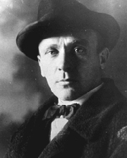
Srovnej Goethova Fausta s románem Mistr a Markétka.
|
Isaak Babel (1894-1941)
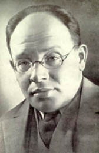
Babel stál v dobì Øíjnové revoluce a obèanské války na stranì bolševikù. Ve 30. letech se ale ocitl v nemilosti. Byl zatèen a jeho rukopisy postihla konfiskace. Zemøel v nìkterém ze stalinskıch pracovních táborù. Babel je autorem povídkovıch sbírek Rudá jízda a Odìské povídky.
|
Isaak Babel: Rudá jízda
Rámec povídkového cyklu Rudá jízda tvoøí støetnutí První jízdní armády soudruha Buïonného s polskımi intervenèními jednotkami v roce 1920. Autor líèí okolnosti ta�ení Rudé armády proti zahranièním interventùm a osudy øadovıch vojákù se syrovım humorem. Vypravìèem vìtšiny povídek je intelektuál Ljutov, jeho� racionální odstup kontrastuje s pro�itky ostatních vojákù.
Babel rozbíjí tradièní stavbu povídky. Své prózy skládá z rùznıch fragmentù – èásti dopisù, hlášení, komentáøù, úvahy, útr�kù vyprávìní a dialogù. Podle literárního teoretika Šklovského Babel „mluví jedním dechem o hvìzdách a o kapavce“.
|
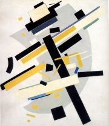
Malevièova abstraktní kompozice
Co si myslíš o Kurïukovovi?
Kterımi jazykovımi prostøedky autor Kurïukova charakterizuje.
Jakı byl Saška Kristus?
Jak se ti líbí Babelùv styl?
|
Ivan Bunin (1870-1953)
Bunin pocházel ze starobylého, ale zchudlého šlechtického rodu. Odmítal bolševickou revoluci a emigroval do Francie. Napsal prózy Vesnice, Mí�ova láska nebo Temné aleje, novelu Pán ze San Franciska, román �ivot Alexeje Arseòjeva a deníkové zápisky z období revoluce Zloøeèené dny. Roku 1933 obdr�el Nobelovu cenu za literaturu.
|
Ivan Bunin: Temné aleje
Sbírka povídek Temné aleje obsahuje hlavnì prózy o neš�astné lásce.
|
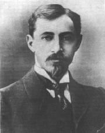
O èem jsou povídky Smaragd a Kmotra?
Kdo je kmotr/a?
|
Michail Šolochov (1905-1984)
Šolochov pocházel z oblasti Donu, kde se zapojil do boje proti bìlogvardìjcùm. Pozdìji se stal vysokım komunistickım funkcionáøem. V duchu socialistického realismu napsal prózy Donské povídky, Tichı Don, Rozrušená zemì nebo Osud èlovìka. Roku 1965 obdr�el Nobelovu cenu za literaturu.
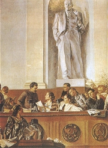
Jak je zobrazen Stalin na obraze Grigorije Šigala Vùdce, uèitel, pøítel?
|
Michail Šolochov: Tichı Don
Šolochovovo autorství Tichého Donu bylo opakovanì zpochybòováno (napø. Sol�enicynem), ale nepodaøilo se prokázat, �e knihu napsal nìkdo jinı. Rozsáhlı ètyødílnı román líèí osudy donskıch kozákù na poèátku 20. století. Hlavní postavou je Grigorij Melechov, kterı øeší dilema, zda se má pøidat k bolševikùm nebo k bìlogvardìjcùm.
Michail Šolochov: Donské povídky
Donské povídky podávají syrové svìdectví o osudech lidí v revoluèní dobì. Dìjištìm jednotlivıch povídek je povodí Donu a hlavními postavami jsou zdejší kozáci.
Další autoøi a jejich díla
Maxim Gorkij: Matka, Mìš�áci, Moje univerzity
Michail Zošèenko: Historie jednoho �ivota, Pøed vıchodem slunce
Ilja Erenburg: Neobyèejná dobrodru�ství Julia Jurenita, Pád Paøí�e, Tání, Lidé, roky, �ivot
Marina Cvetajevová: Labutí šíje, Poema hory, Poema konce
Alexej Tolstoj: Køí�ová cesta, Paprsky in�enıra Garina
Alexandr Fadìjev: Mladá garda
Nikolaj Ostrovskij: Jak se kalila ocel
Boris Polevoj: Pøíbìh opravdového èlovìka
|
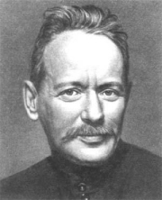
Øíjnová revoluce bıvá nìkdy nazıvána plebejskım puèem. Jak s tímto oznaèením koresponduje Šolochovova povídka?
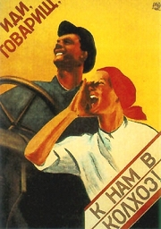
Pojï k nám do kolchozu, soudruhu! (plakát Vìry Korablevové)
|
Internetové stránky
Socialistickı realismus
Socialistickı realismus
Rusian utopia
Chagall, malíø
Bulgakov: Egyptská mumie
Bulgakov
Bulgakov
Bulgakov
Bulgakov
Bunin
Šolochov
Šolochov: Škola nenávisti
Lenin
Lenin
Stalin
Stalin
Lomonosovova univerzita, Moskva
|
Doporuèená èetba
Babel, Isaak: Rudá jízda, pøel. J.Zábrana, Lidové nakladatelství, Praha 1984
Bulgakov, Michail: Bílá garda, Divadelní román, pøel. A.Morávková, Odeon, Praha 1990
Bulgakov, M.: Miniatury, pøel. A.Morávková, Paseka, Praha 1994
Bulgakov, M.: Mistr a Markétka, pøel. A.Morávková, Odeon, Praha 1990
Bulgakov, M.: Novely a povídky, pøel. Dušková, Morávková, Odeon, Praha 1990
Bunin, Ivan: Temné aleje lásky, pøel. J.Zábrana, Mladá fronta, Praha 1982
Morávková, Alena: Køí�ová cesta Michaila Bulgakova, Paseka, Praha 1996
Lenin, Vladimir Iljiè: O literatuøe, Praha 1950
Lenin, V.I.: Sebrané spisy
Lunaèarskij, Anatolij Vasiljeviè: Stati o umìní (3 svazky)
Markov, D.: Geneze socialistického realismu, Praha 1973
Orlov, Vladimír: Fénix, �ivot Alexandra Bloka, pøel. J.Šanda, Odeon, Praha 1985
Socialistickı realismus, Praha 1935
Šolochov, Michail: Donské povídky, Osud èlovìka, pøel. J.Fromková, Odeon, Praha 1973
Šolochov, M.: Tichı Don (4 svazky), pøel. V.Borek, Praha 1979
Zahrádka, Miroslav: Ruská literatura XX. století, Literární proudy a osobnosti, Periplum, Olomouc 2003
Zahrádka, M.: Michail Šolochov, Motivy – kompozice – styl, Praha 1975
�danov, Andrej Alexandroviè: O umìní, Orbis
|
Vypracuj písemnı referát o nìkteré z uvedenıch knih.
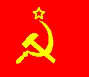
Vlajka SSSR
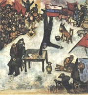
Chagall: Revoluce
|
|